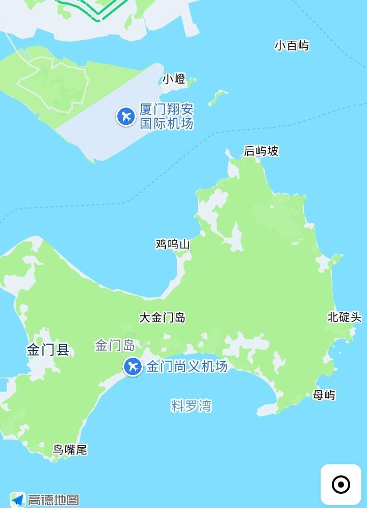

至于厦门新机场距金门是真的太近，支持共用新机场是对的，具体可以参考厦金大桥（金门段）的规划
上海福建居民赴台个人游的事，没那么快，年内都不一定有。民进党对于陆客是抵触的，福建居民去金马都谈了一年才开，上海的提案去年就已经被驳回。现在连团队游还没实现，就别抱太高的期望了。
不同于港澳，尽管大陆批了G签，对岸不给也入台证，依旧无法入境台湾。在2023年刚恢复福建居民小三通那会，大陆这边的G签是「仅限直航金门、马祖」，而对岸给的是除台岛外的地区（即澎金马），是可以在未经大陆许可走金门尚义机场飞澎湖。当时福建旅行社高调宣传，导致入金证最后只剩下金马地区
人都到了台湾管辖的地方了，只要内政部移民署同意，就可以跟陆配、港澳台、外籍人士一样直接走金门赴台（本岛），无非就是多一个在金马地区换证的选项，还能再多收陆客一笔办证费。拿偷跑澎湖的事来说，只要走小三通往返，大陆只知道你去了金门。
上海福建居民赴台个人游的事，没那么快，年内都不一定有。民进党对于陆客是抵触的，福建居民去金马都谈了一年才开，上海的提案去年就已经被驳回。现在连团队游还没实现，就别抱太高的期望了。
不同于港澳，尽管大陆批了G签，对岸不给也入台证，依旧无法入境台湾。在2023年刚恢复福建居民小三通那会，大陆这边的G签是「仅限直航金门、马祖」，而对岸给的是除台岛外的地区（即澎金马），是可以在未经大陆许可走金门尚义机场飞澎湖。当时福建旅行社高调宣传，导致入金证最后只剩下金马地区
人都到了台湾管辖的地方了，只要内政部移民署同意，就可以跟陆配、港澳台、外籍人士一样直接走金门赴台（本岛），无非就是多一个在金马地区换证的选项，还能再多收陆客一笔办证费。拿偷跑澎湖的事来说，只要走小三通往返，大陆只知道你去了金门。
